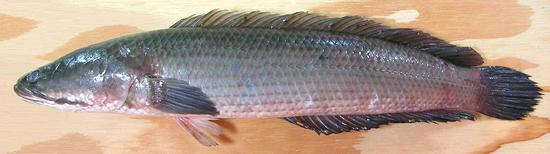

Snakehead / Mudfish

[Mudfish, Spotted Channa, Snakehead murrel (USA); Zmeegolova (Uzbek);
Dalag (Philippine); Murel, Murrel, Varaal (India);
Cá Lóc Cá Qua, Cá Chuoi (Viet);
Nga Yant (Burma); Ikan Gabus (Indonesia); Channa striata,
Chana argus and other Channa species]
This excellent eating fish is sold as "Mudfish" in Southern
California's Asian fish markets, and is one of the most important food
fish in Thailand, Vietnam and Malaysia. It's also very popular in
Central Asia, India and the Philippines. Both wild and farmed snakeheads
are sold live in Asia, and will stay alive for several days in a basket
of wet straw - but if you get caught with a live Mudfish here in
California, it'll be you that's in very deep (legal) mud.
The Northern Snakehead (C. argus), which can stand
cooler temperatures, now infests some parts of the United States,
including the Potomac, Charles River, and the Mississippi Basin,
introduced by brain dead aquarium owners, poorly educated Asians and
careless fish farmers.
"Spotted Channa" is the name chosen by the Charles County, Maryland,
Commissioners in a contest to find a more appetizing name for this fish
for use in restaurants and fish markets. Given that, we should call the
one in the markets here in Southern California (C. striata)
"Streaky Channa", but we don't have a live fish problem here. All
Snakeheads are voracious predators and are not in any way threatened -
they're more on the threat side - so eat as many as you'd like,
they're delicious!
Snakeheads can grow to 40 inches and 6.6 pounds but the photo specimen,
wild caught in Vietnam, was 18-3/4 inches and 2 pound 12-5/8 ounces. It's
a fresh water fish preferring muddy water, and like the notorious
Walking Catfish can survive extreme
conditions. It can travel long distances over land to exploit new ponds
and rivers.
More on Varieties of Fish (very
large page).
Snakehead flesh is pink or nearly white depending on cooking method,
with an attractive flavor - most people should like it. Wet cooked, the
flesh is tender, fine grained and does not flake apart, making it
excellent for soups, stews and curries. It is also used to make
fermented fish sauces, especially Pa Daek in Laos and
Nam Pla Raa in Issan, Thailand where only freshwater fish are
used. For details see our
Tuk Prahok Sauce
page.
This fish is extremely slimy, making it rather difficult to hold on to
until it is scaled, beheaded, cleaned and rinsed several times. Scaling,
cleaning, filleting and skinning a whole fish will take 20 min to 25
minutes depending on your skill level and tools.
Buying:
This is a popular fish in Southeast Asia, so is
available in most Asian fish markets here in Southern California. The
photo specimen, 18-3/4 inches long, weighing 2 pounds 12-5/8 ounces, was
purchased from a Philippine market in Los Angles (Eagle Rock, actually)
for 2016 US $3.99 / pound. Some of the large Asian market also have
this fish already scalled and partially cleaned in the frozen food
cases.
Scales:
Snakehead scales are very large but not
difficult to scrape off, with just moderate flying about.
Cleaning:
Cleaning is a little different from most
fish - there's lots of innards running from the head all the way to the
tail. After making the usual incision from vent to under the jaw, make a
cut into the body cavity on each side of the long bottom fin and pull it
out. The innards are tough and well attached up at the head end. Use
kitchen shears to cut them loose from the head (and immediately rinse off
the green stuff that may spurt out). The gills are difficult to pull, you
would need to cut them loose at the ends with kitchen shears, then pull
them with long nose pliers. This is a waste of time as I do not recommend
the head for stock, just cut the whole head off and toss it.
Skin:
The skin has almost no shrink, and becomes
quite tender when cooked. Fillets can be pan fried skin-on with no
problems, and I recommend it that way. A skin-on fillet dropped into hot
poaching liquid will curl only slightly. The skin has no strong or off
flavor, but can be easily removed using the long knife and cutting board
Method. In Asia, the skins are often
sold separately from the fish, and are valued for making stock.
Fillet:
Filleting this fish is not hard, even though the
the body cavity runs all the way from head to tail, with ribs all the
way. At the front end they are very short, but attached to substantial
centerline spines. Cutting in from the top you'll not find any bones to
guide you until you're almost to the backbone.
Once down to the backbone I usually just cut the ribs from the backbone
with kitchen shears, all the way to the tail. Up at the head 1/3, the
ribs are very short, around 3/4 inch, but are attached to very
substantial centerline pin bones (which go all the way out to the skin).
I pull all these bones with long nose pliers, holding the flesh firmly to
keep the bones from tearing it up. By time you have pulled all the pin
bones, you'll have pulled all the ribs as well. You may still feel some
prickliness along the centerline way out by the skin, but these bits will
soften with cooking.
Yield:
A fish 18-3/4 inches long and weighing 2 pounds
12-5/8 ounces yielded 1 pound 8-1/4 ounces of skin-on fillet (54%) and
1 pound 6-1/2 ounces skinless (50%). A smaller fish will yield a somewhat
lower percentage. In some cases Snakehead is sold factory cleaned, which
will give a yield of around 59% skin-on.
Cooking:
Poaching, pan frying, roasting, baking, chunks
in soups, stews and curries - this fish works very well for all these
methods, and offers excellent flavor. It isn't at all oily, so it's
probably not very good for grilling or smoking.
Stock:
The skins make an excellent light stock with
plenty of body and almost no fishy taste, explaining why the skins can
sell at a higher price than the fish. Bones should be OK, but I do not
recommend using heads and fins as they produce a strong flavored murky
tan stock. See Method.
sf_snakehz 060704 - www.clovegarden.com
©Andrew Grygus - agryg@clovegarden.com - Photos
on this page not otherwise credited © cg1
- Linking to and non-commercial use of this page permitted